That empty wall behind your sofa can make an otherwise beautiful living room feel strangely unfinished.
I have made this mistake myself: a great sofa, a decent rug, nice lighting, and then one giant blank wall sitting there like it forgot to participate.
The right sofa wall decor ideas can completely change that.
You can use oversized artwork, a gallery wall, mirrors, shelves, baskets, textiles, or even architectural details to give the wall personality without making the room feel cluttered.
The trick comes down to scale, spacing, color, and balance.
So before you start hammering nails into the wall, let us talk about what actually works.

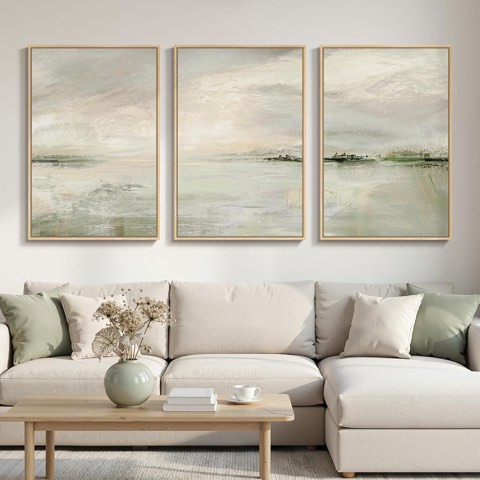
Large Framed Sage Green Abstract Landscape Wall Art for Living Room, 24x36
Shop on AmazonMy Favorite Approach to Sofa Wall Decor
If I had to decorate a blank sofa wall from scratch, I would start with the sofa and work outward.
For a neutral sofa, I would probably choose one oversized artwork, a large mirror, or a curated gallery wall.
For a colorful sofa, I would keep the wall quieter and let the upholstery take some attention.
Then I would repeat one or two materials from the rest of the room.
Maybe the artwork includes warm wood tones that connect with the coffee table.
Maybe a black frame echoes the lighting.
Maybe muted green artwork connects with the plants.
That connection makes the entire living room feel intentional.
And honestly, that matters more than following some rigid decorating formula.
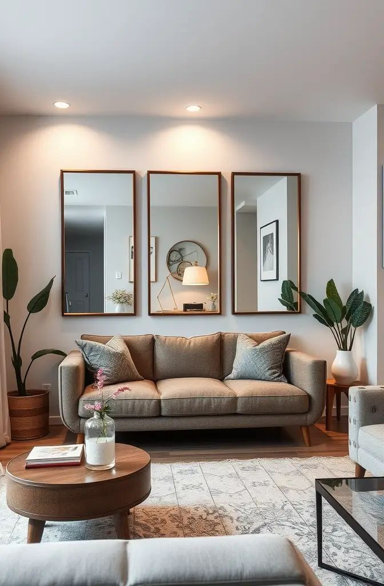
Common Sofa Wall Decor Mistakes to Avoid
Even great ideas can go wrong with poor proportions.
The first mistake involves hanging everything too high.
Designers frequently see this exact problem, clients hanging their artwork too high more often than you would expect.
The second mistake involves choosing artwork that feels too small for the sofa.
The third involves adding too many unrelated colors.
Your wall decor does not need to match the sofa exactly, but the pieces should share some visual relationship.
Finally, do not decorate every available inch.
Leaving some neutral wall space so the eye can genuinely rest is worth prioritizing too.
That little bit of restraint can make the decorated areas feel much more special.
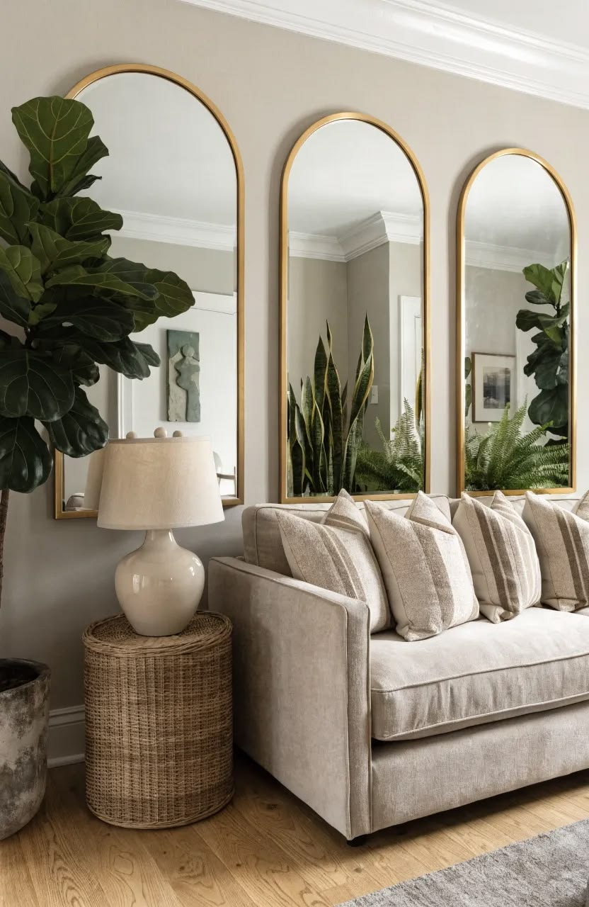
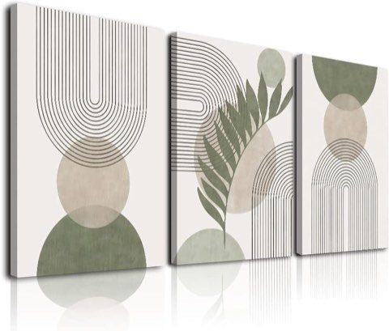
Sage Green Boho Wall Art Set of 3, Minimalist Framed Wall Art Geometric Line Leaf Sun Moon Beige Green Canvas Artwork Paintings, Abstract Botanical Boho Room Decor, Office, 12"x16"
Shop on AmazonHow to Choose the Right Sofa Wall Decor
Before you buy anything, look at the sofa itself.
Is it bulky or slim?
Curved or angular?
Neutral or colorful?
Does it already attract attention?
If your sofa has a bold pattern, I would keep the wall decor relatively simple.
If you have a plain cream or gray sofa, you can take more risks with artwork.
Also consider the rest of the room.
A large mirror might work beautifully in a darker living room because it can reflect light.
A colorful gallery wall might work better in a neutral room where it can become the main focal point.
And remember scale.
Small decor above a large sofa often looks accidental.
Large decor above a large sofa usually feels intentional.
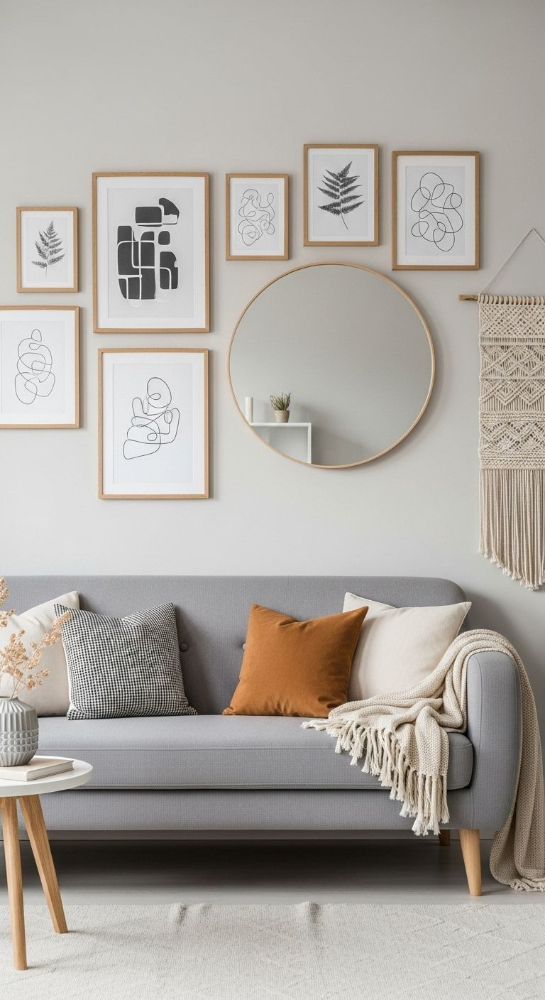
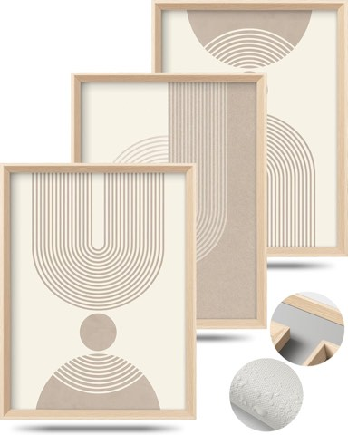
HesenDot Neutral Abstract Framed Wall Art, Modern Geometric Canvas Prints
Shop on Amazon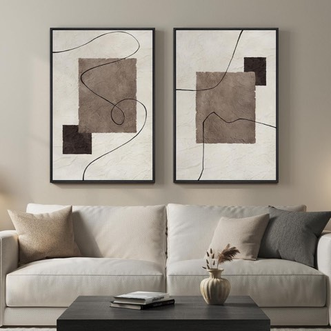
Framed Neutral Modern Abstract Geometric Wall Art for Living Room, 24x36 In
Shop on Amazon19 Sofa Wall Decor Ideas Worth Trying
Now for the fun part.
These sofa wall decor ideas cover everything from minimalist living rooms to cozy traditional spaces, so you can find an approach that actually fits your home.
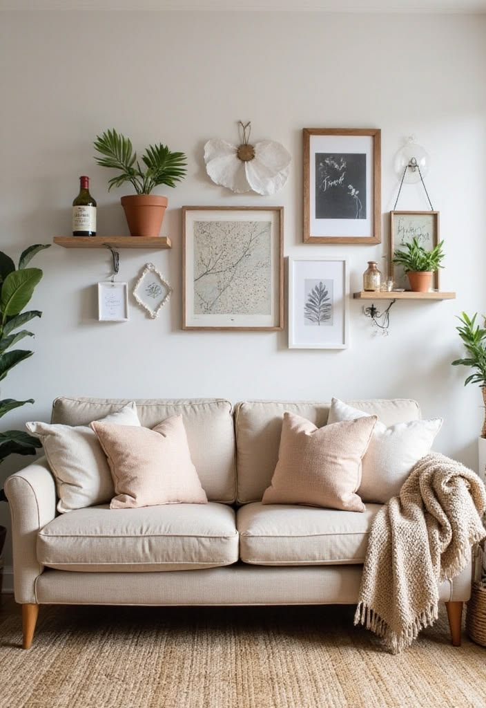
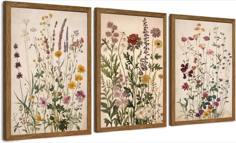
AVECCO 3 Piece Vintage Wildflower Botanical Framed Canvas Wall Art 12x16 in
Shop on Amazon
1. Mix Art, Mirrors, and Objects
If you cannot decide between a gallery wall, mirror, and decorative objects, do not choose.
Combine them.
Start with one larger central artwork or mirror, then surround it with smaller prints, baskets, sculptural objects, or personal pieces.
Keep one thing consistent across the arrangement, such as:
- A shared color palette
- Similar frame finishes
- A repeated material
- One artistic theme
This creates an eclectic look without creating visual chaos.
Different art styles can work together just fine when you connect them through color, complementary tones, framing, matting, theme, spacing, and layout.
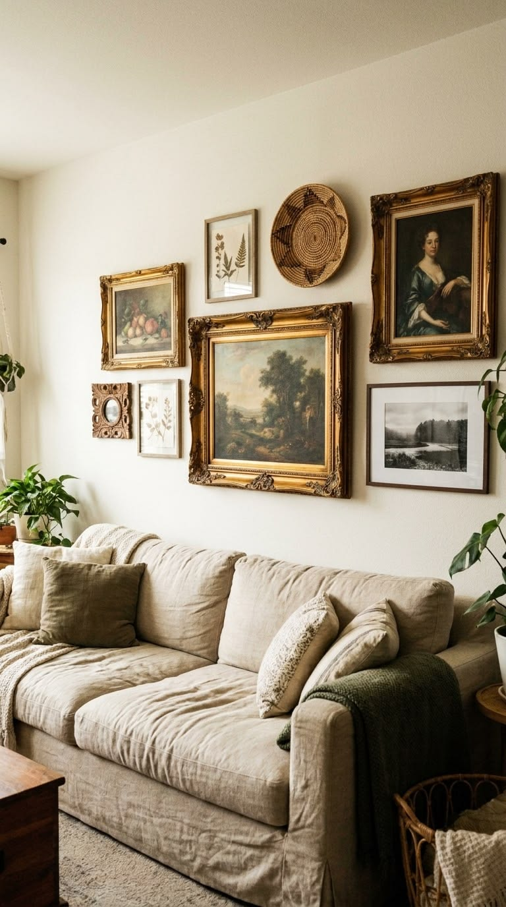
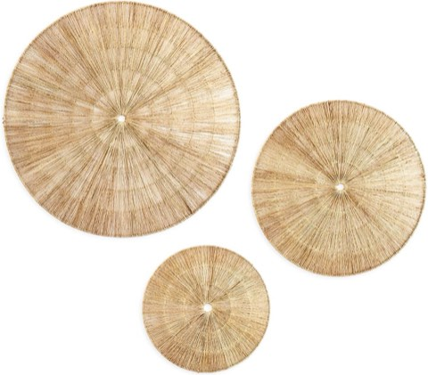
PEMAR Handwoven Jute Wall Hanging Baskets, Set of 3 Round Woven Wall Decor (22", 19", 15"), Decorative Wall Accents for Living Room, Bedroom and Entryway
Shop on Amazon2. Add Greenery Around the Sofa Wall
Plants can soften a decorated sofa wall beautifully.
You can place a tall plant beside the sofa and combine it with artwork above.
Or use small trailing plants on a floating shelf.
The greenery introduces an organic shape that contrasts nicely with rectangular artwork.
Just avoid turning the wall into a jungle unless you genuinely want your living room to start charging admission.
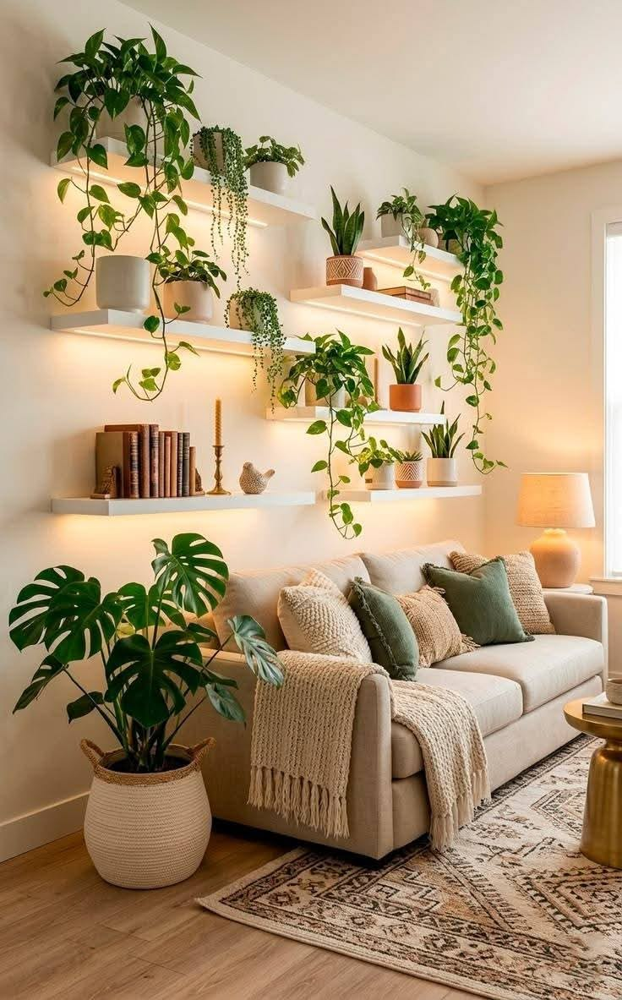
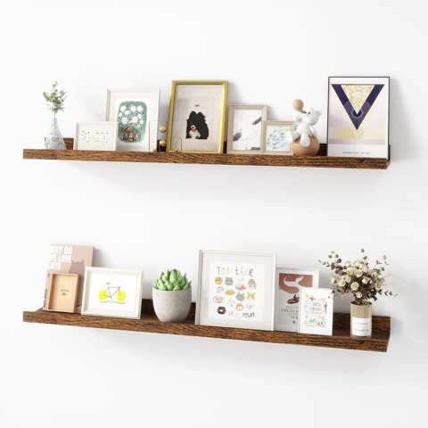
Acovy 36 inch Picture Ledge Shelf, Wood Floating Shelves, Brown, Set of 2
Shop on Amazon3. Create a Small Personal Gallery
Not every gallery wall needs twenty pieces.
A compact arrangement of three to five meaningful pieces can feel much more personal.
Use vacation photographs, vintage finds, artwork from local artists, children's drawings, or pieces you have collected over time.
I actually prefer this approach when decorating a home that needs to feel lived-in rather than staged.
The goal should feel more like your collection and less like a furniture showroom.
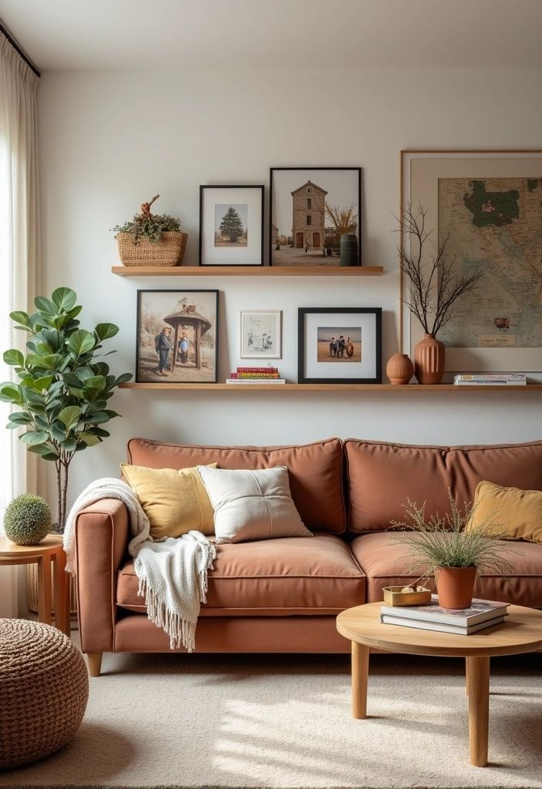
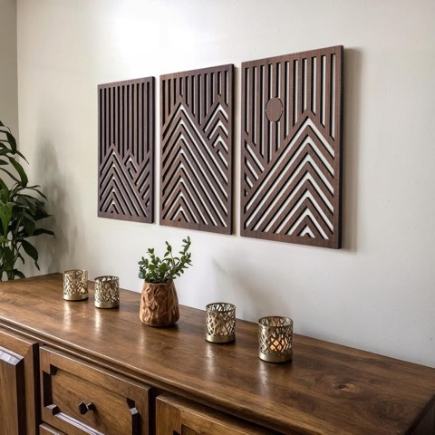
qmmp Modern Wooden Wall Sculptures - Set of 3 - Home Decor Accent - Large Wall Art for Living Room, Bedroom, Office - Easy Installation (Walnut, Medium - Mountain and Sun)
Shop on Amazon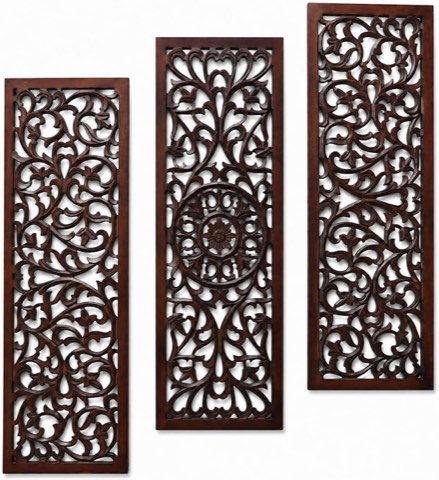
The Wooden Town Carved Wood Wall Art Set of 3, 36x12 Inch, Burnt Finish
Shop on Amazon4. Use Picture-Frame Molding With Minimal Art
If you love traditional interiors, combine wall molding with restrained artwork.
Paint the molding and wall the same color for a sophisticated tone-on-tone effect.
Then place one large artwork in the center.
This strategy gives you visual interest without needing a busy gallery wall.
It also makes a relatively inexpensive artwork feel more substantial because the architecture creates a frame around the entire composition.
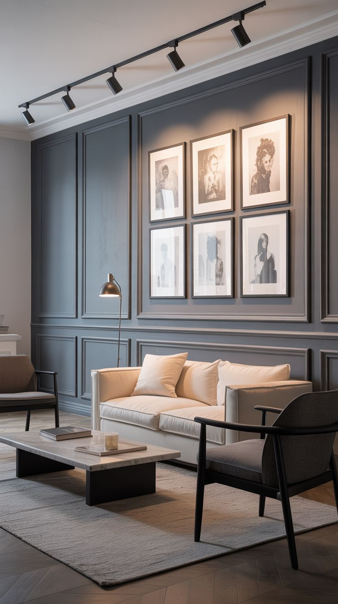
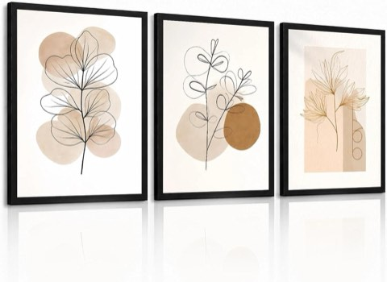
Framed Minimalist Art Set of 3, Botanical Line Prints, Pictures Wall Decor
Shop on Amazon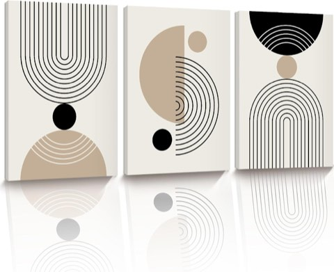
HesenDot Abstract Geometric Wall Art Set of 3, 30x40CM Minimalist Line Framed Canvas Prints, Boho Modern Neutral Beige Black Shapes Wall Decor for Living Room Bedroom Bathroom Office Home
Shop on Amazon5. Try a Large Landscape Painting
Landscape artwork can bring a calm, collected feeling to the room.
Choose something with colors that already appear in your sofa, rug, curtains, or cushions.
For example, a beige sofa might pair beautifully with a landscape featuring muted greens, warm browns, cream, and soft blue.
The artwork does not need to match everything perfectly.
A few shared colors create enough connection.
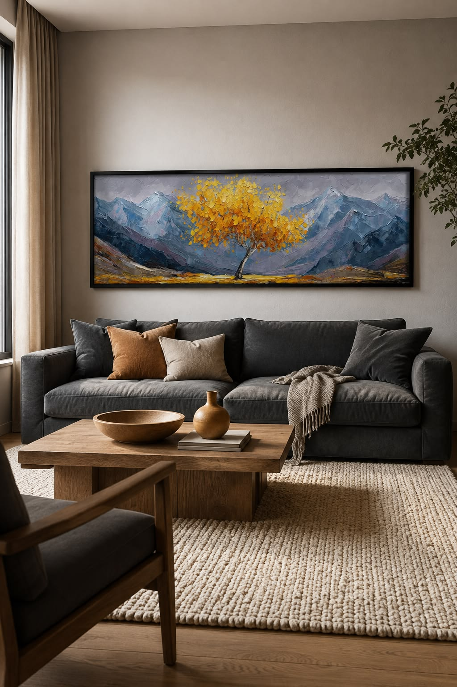
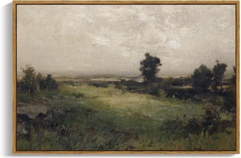
InSimSea Framed Canvas Wall Art Vintage Decor, Framed Vintage Landscape Canvas Wall Art, Wild Field Oil Painting Prints, Cottagecore Bedroom Bathroom Office Decor, 24"x36"
Shop on Amazon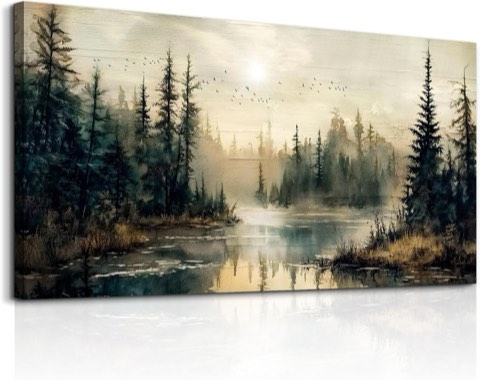
FUHAIHUA Canvas Wall Art For Living Room Large Wall Decor For Bedroom Modern Office Wall Decorations Forest River Landscape Paintings Farmhouse Pictures Artwork Room Aesthetic Home Decor 20x40 In
Shop on Amazon6. Hang Sculptural Wall Decor
Think beyond flat artwork.
Metal sculptures, wooden shapes, ceramic pieces, and dimensional wall art can create shadows and texture that framed prints simply cannot.
It is worth thinking beyond two-dimensional art entirely, metal, wood, and ceramic wall sculptures are all solid alternatives worth considering.
This approach works beautifully in modern, organic, minimalist, and contemporary living rooms.
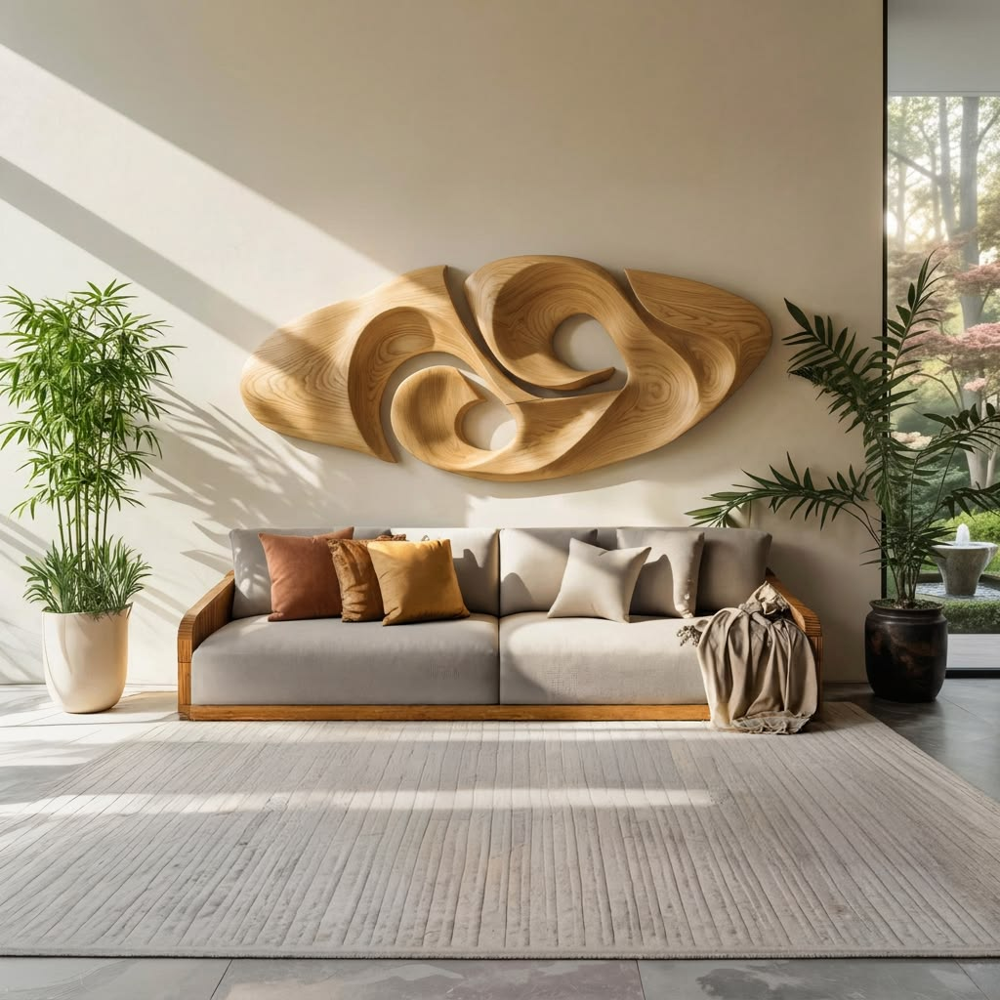
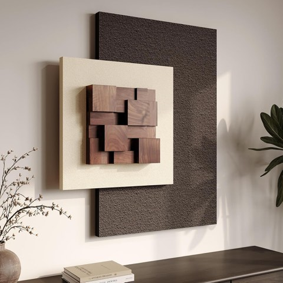
Large Wood Abstract Wall Art for Living Room, Modern 3D Artwork for Walls
Shop on Amazon7. Layer Art on a Picture Ledge
Picture ledges offer one of my favorite combinations of flexibility and style.
Instead of permanently committing to a gallery wall, place several framed pieces on a ledge and layer them.
You can change the arrangement whenever you get bored.
And if you are someone who constantly changes decor, this setup makes much more sense than creating seventeen holes in the wall every time you discover a new print.
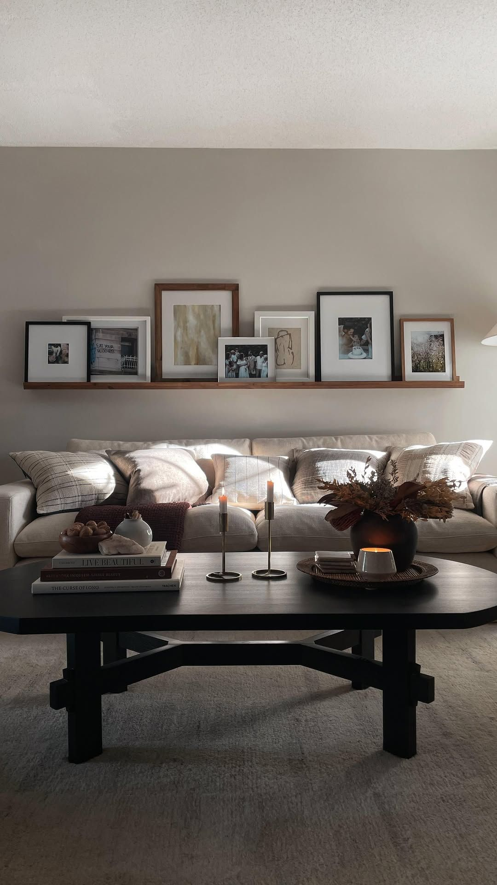
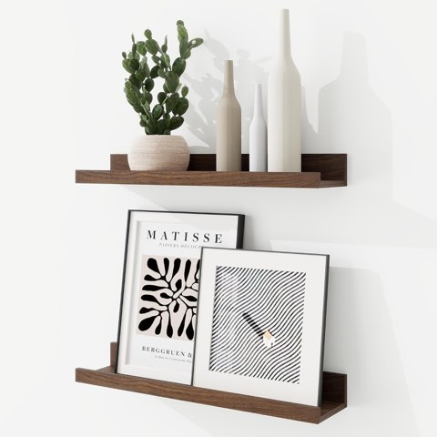
RICHFOCUS Picture Ledge Shelf, 16 inch Floating Shelves Set of 2, Wood Wall Shelves with Lip, Wall Decor Storage for Bedroom Living Room Bathroom Kitchen Nursery Photo Picture, Walnut
Shop on Amazon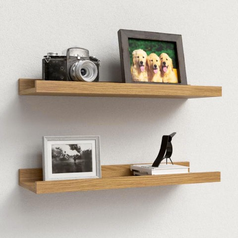
Boswillon Floating Shelves Set of 2, Small Wall Shelf with Lip, 16in, Oak
Shop on Amazon8. Create a Colorful Statement Wall
Your sofa wall can become the room's color moment.
Paint the wall behind the sofa in a deeper shade than the surrounding walls, then keep the artwork relatively simple.
Try:
- Warm olive green
- Deep taupe
- Charcoal
- Terracotta
- Muted navy
- Rich brown
The goal is not necessarily to create dramatic contrast.
You can also choose a slightly darker version of your existing wall color for a more subtle effect.
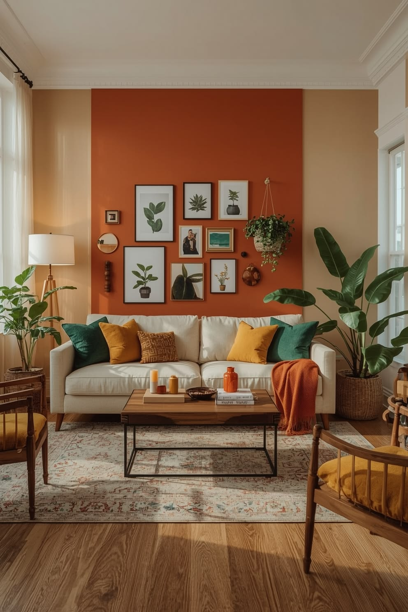
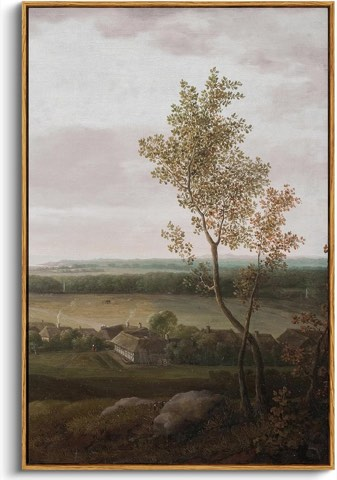
InSimSea Framed Canvas Prints Art Vintage Decor, Rural Scenery Landscape Paintings, Large Countryside Farmhouse Hanging Wall Decorations for Living Room Dining Room Bedroom, 24"x36"
Shop on AmazonMHARTK66 Large Size Wall Art for Living Room Modern Wall Decor for Bedroom Office Decor Abstract Mountain Forest Landscapes Ink Painting 3 Piece Framed Canvas Art Prints Ready to Hang Wall Pictures
Shop on Amazon9. Make a Symmetrical Sofa Wall
Symmetry can instantly make a room feel organized.
Place matching artwork, mirrors, sconces, or framed prints on either side of a central piece.
You do not need to make every item identical, but repeating shapes and proportions can create a strong sense of balance.
A symmetrical arrangement works especially well in traditional, transitional, and classic living rooms.
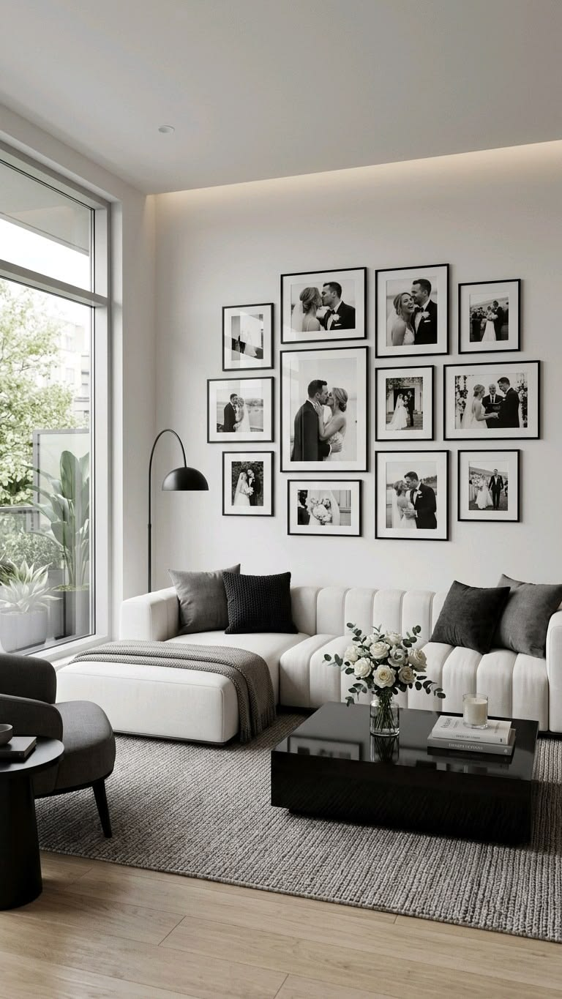
Vintage Black And White Poster Italy Amalfi Coast Car Canvas Wall Art Retro Luxury Travel Landscape Photography Prints Painting For Living Room Bedroom Apartment Wall Decor 16x24in Unframed
Shop on AmazonFramed Black And White Retro Newspaper Wall Art Motivational Office Decor
Shop on Amazon10. Hang Black and White Photography
Black and white photography gives you an easy way to create contrast without introducing a new color.
Try oversized photographs of architecture, landscapes, people, or abstract textures.
Use simple black frames for a modern look.
If your sofa and walls already have warm neutral colors, monochrome photography can add just enough contrast to keep the room from becoming one giant bowl of beige.
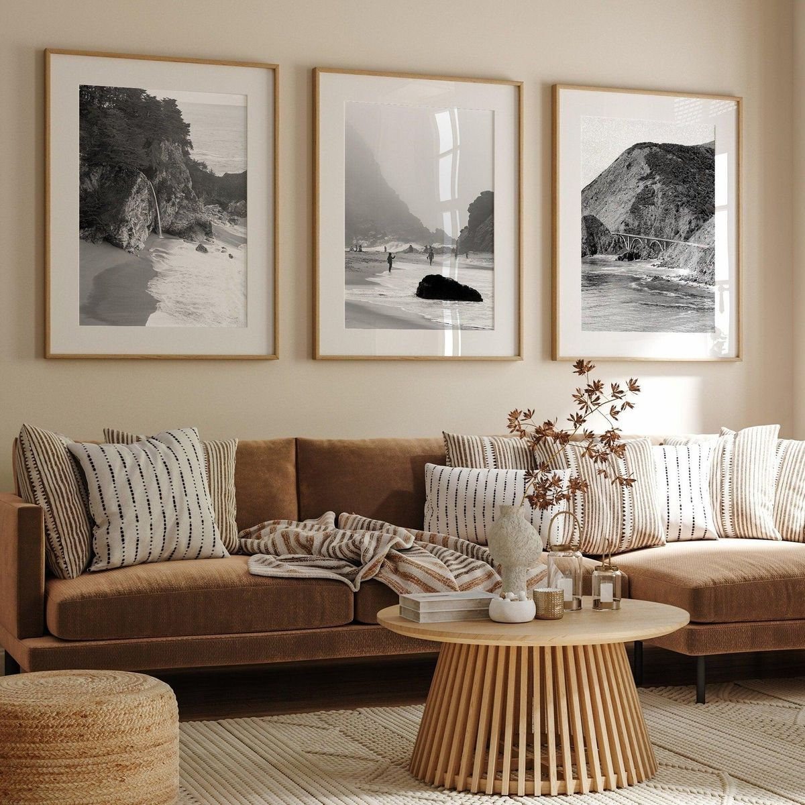
3 Pcs Framed Black and White Cheetah Canvas Wall Art, 16x24in
Shop on AmazonENGLANT-4 Panels Set Framed Canvas Print for Seascape Beach and Boat Sunrise Scenery Black and White Giclee Canvas Print Wall Art Ready to Hang
Shop on Amazon11. Use an Arched Mirror
If a round mirror feels too predictable, try an arched mirror.
An arch introduces a slightly architectural shape and works particularly well with modern organic interiors.
Pair it with a curved sofa, rounded coffee table, or arched floor lamp to repeat the shape elsewhere in the room.
Ever noticed how repeated shapes make a room feel more intentional?
That is exactly what you are doing here.
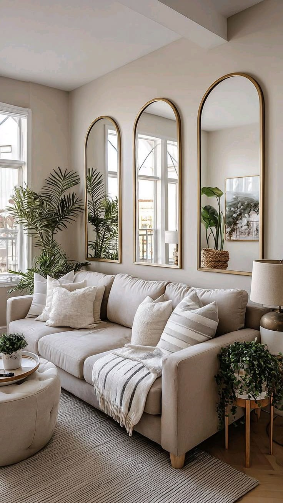

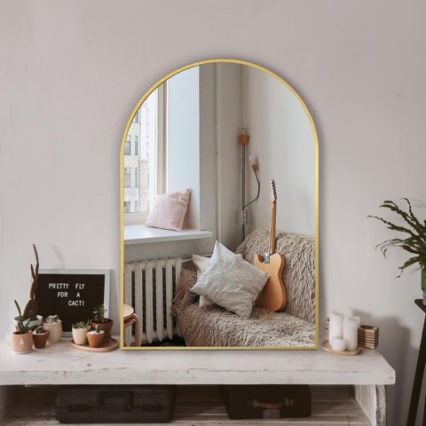
Arched Bathroom Mirror for Wall, 36" x 24" Metal Frame Vanity Mirror, Gold
Shop on Amazon12. Create a Textured Textile Wall
A textile can make the wall feel softer and more interesting.
Try a woven wall hanging, tapestry, macrame piece, or fabric artwork above the sofa.
I prefer this approach when the rest of the room already contains plenty of hard surfaces.
Wood tables, glass, metal lighting, and smooth walls can benefit from something tactile.
The textile also works beautifully with cozy bedroom-inspired living rooms where you want that relaxed, layered feeling.
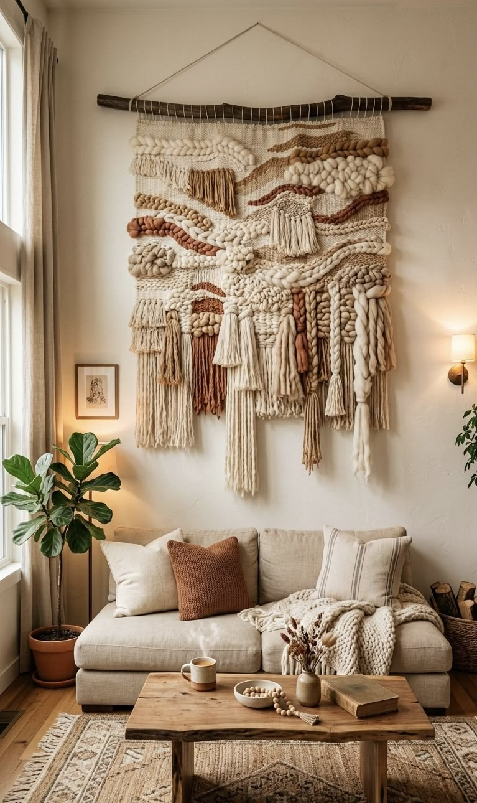
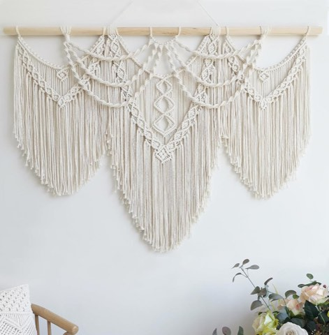
Achart Macrame Wall Hanging Large- Boho Wall Decor- large wall art- Wall Decor Living Room- Macrame Tapestry Boho Decor for Bedroom (Beige-Fringe)
Shop on Amazon
Achart Macrame Wall Hanging Large- Boho Wall Decor- large wall art- Wall Decor Living Room- Macrame Tapestry Boho Decor for Bedroom (Wooden Bead)
Shop on Amazon13. Install Decorative Wall Molding
Sometimes the best sofa wall decor involves decorating the wall itself.
Picture-frame molding, board and batten, or simple vertical paneling can give a plain wall architectural interest without requiring lots of accessories.
Then you can hang one simple artwork above the sofa.
This works particularly well when you want an elegant living room that does not rely heavily on accessories.
Architectural details like crown molding, window trim, wainscoting, and ceiling beams are all reliable ways to add character to living room walls generally.
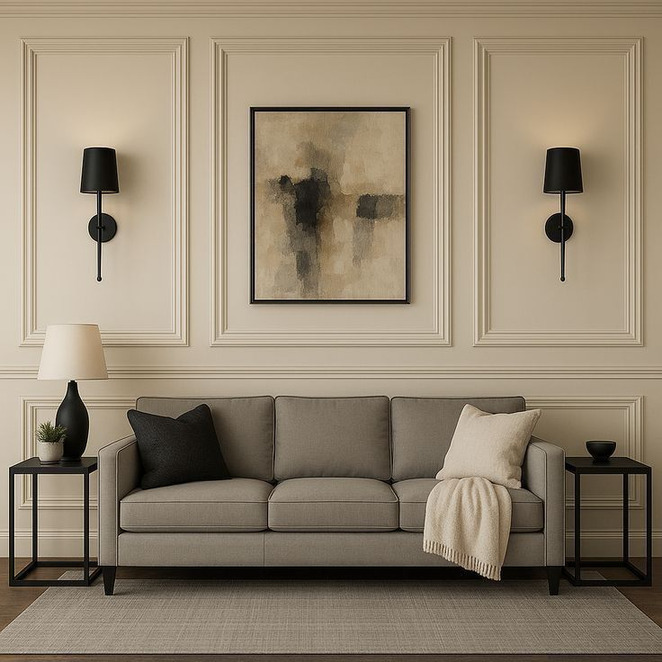
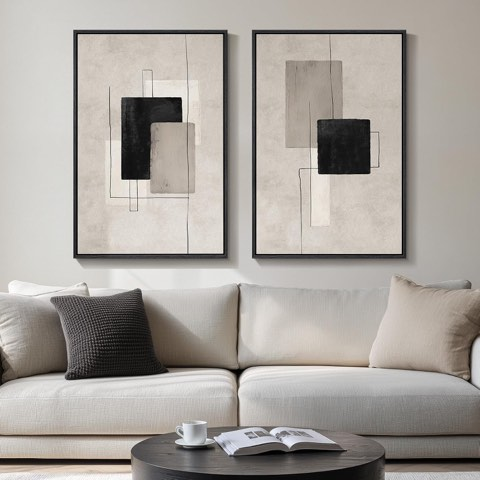
Large Framed Neutral Black Beige Abstract Wall Art Decor Set of 2, 20x30 In
Shop on Amazon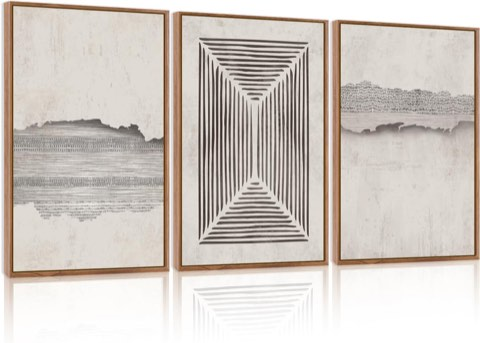
CHDITB Modern Abstract Canvas Wall Art, Neutral Framed Art Prints, Black Beige Large Wall Painting, Geometric Line Textured Minimalist Wall Decor for Living Room Bedroom Dining Room Office 24"x36"x3
Shop on Amazon14. Hang Woven Baskets
Want something warmer and less predictable than framed art?
Try woven baskets.
A collection of baskets can bring texture, natural materials, and an earthy feel to the living room.
Mix different sizes but keep their colors within the same general palette.
This idea works especially well with:
- Beige sofas
- Linen furniture
- Neutral walls
- Japandi interiors
- Coastal rooms
- Boho spaces
You can create a loose cluster rather than a perfectly symmetrical arrangement.
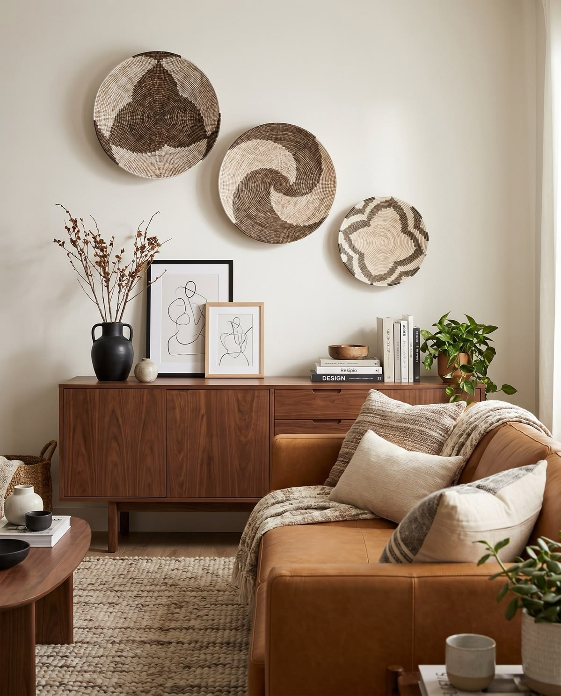
15. Add Floating Shelves
Floating shelves give you both decoration and storage.
Install one or two shelves above the sofa and style them with a combination of:
- Small framed artwork
- Ceramic vases
- Books
- Candles
- Sculptural objects
- Small plants
Do not fill every inch.
Seriously.
Leaving some empty space makes the arrangement feel curated rather than like you emptied a drawer onto the shelf.
Floating shelves are really a streamlined way to use empty walls while displaying keepsakes and adding genuine storage at the same time.
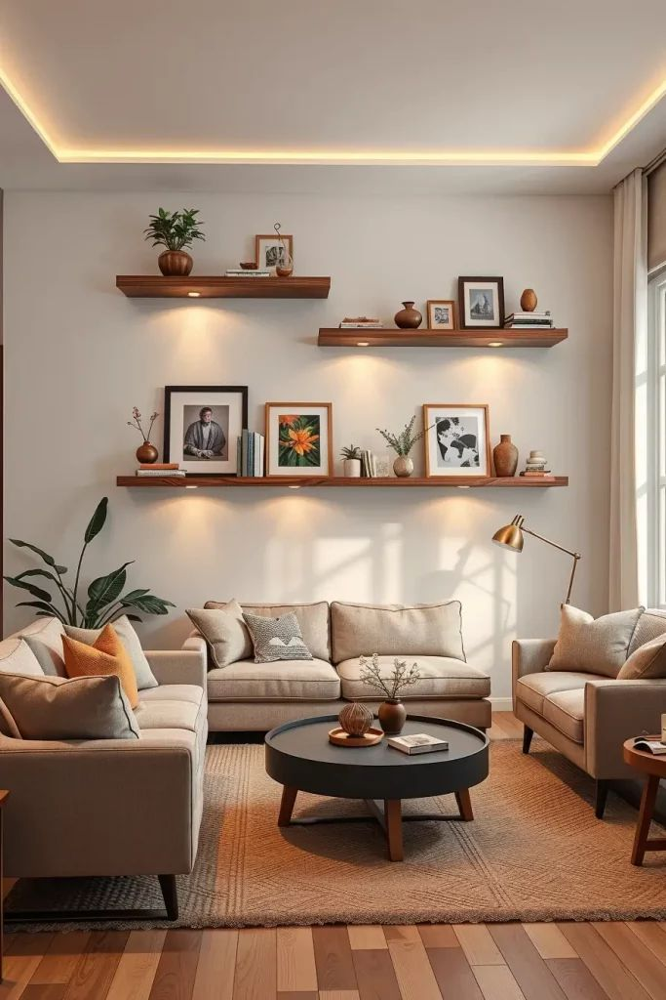
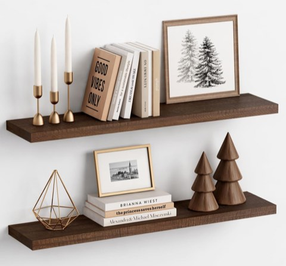
Harwaya 36 Inch Floating Shelves for Wall Set of 2, Large Long Wall Shelves for Living Room Decor, Walnut Brown Wooden Hanging Shelves for Bedroom Kitchen Bathroom Office Books Pictures (Dark Wood)
Shop on Amazon
16. Try Two or Three Framed Prints
You do not always need a huge gallery wall.
Sometimes three carefully chosen prints look much more sophisticated.
Try arranging three similarly sized pieces horizontally above the sofa.
Keep the spacing consistent and use matching frames for a cleaner appearance.
This approach works particularly well if you prefer minimalist sofa wall decor but still want the wall to feel intentional.
You can also use two large prints instead of three.
The trick involves maintaining enough width so the arrangement relates to the sofa.
WRFON Framed Sage Green Botanical Wall Art Set of 3, Watercolor Eucalyptus & Wild Plant Canvas Prints, Minimalist Green Wall Decor for Living Room Bedroom Bathroom, 12x16 Inches
Shop on Amazon
17. Use a Large Round Mirror
A large round mirror can soften a room filled with straight lines.
Place one centered above the sofa and choose a frame that connects with another finish in the room.
Black works beautifully with modern interiors, brass adds warmth, and natural wood suits relaxed spaces.
The mirror also reflects light, which can help a smaller living room feel more open.
I especially like round mirrors above boxy sofas because the contrast creates visual movement without requiring lots of decoration.
Round Bathroom Mirror, Circle Mirror, Black, 30" L x 30" W, 1 Pack
Shop on Amazon
18. Create a Gallery Wall Above the Sofa
A gallery wall gives you much more freedom than a single artwork.
You can combine:
- Family photographs
- Vintage prints
- Botanical artwork
- Abstract paintings
- Travel memories
- Small mirrors
- Personal sketches
For a polished look, choose one connecting element.
You could repeat black frames, warm wood frames, similar colors, or one overall theme.
Gallery walls can mix photographs, art prints, personal mementos, different sizes, and different frames while still maintaining an eclectic look overall.
Before hanging anything, I strongly recommend laying everything on the floor first and testing the arrangement before creating holes in the wall.
Your drywall will thank you.
ArtbyHannah Gallery Wall Frame Set, 8 Pack Neutral Wall Decor, Beige, Large
Shop on AmazonFixwal Picture Frames Set, 15 Pack, MDF, Soft Earth Tones, 8x10, 5x7, 4x6
Shop on Amazon19. Oversized Artwork Above the Sofa
If you want the biggest visual impact with the least amount of fuss, start with one oversized artwork.
Choose an abstract painting, landscape, botanical piece, architectural print, or large photograph.
The artwork should have enough presence to visually anchor the sofa without making the room feel crowded.
I especially like this approach with neutral sofas because the artwork can introduce color without forcing you to redesign the entire room.
A large horizontal piece works particularly well above long sofas.
For a smaller sofa, try a vertically oriented piece or a smaller rectangular canvas.
The best art advice is really this: never stop looking for what genuinely speaks to you, and once you find it, celebrate it.
That is probably my favorite art advice because you do not need to buy something simply because the internet decided it looks trendy this month.
Large Framed Boho Abstract Brown Floral Wall Art for Living Room, 24x36 In
Shop on AmazonLarge Framed Sage Green Abstract Wall Art for Living Room Decor, 36x36 In
Shop on AmazonHow High Should You Hang Decor Above a Sofa?
This question comes up constantly, and thankfully you do not need complicated mathematics.
The common recommendation is leaving around 6 to 12 inches between furniture and artwork, while artwork above a sofa specifically can sit slightly higher to prevent the piece from feeling intrusive.
I usually start there and then step back.
Does it feel connected to the sofa?
Great.
Does it look like the artwork accidentally wandered toward the ceiling?
Bring it down.
XRAMFY 30 Inch Round Mirror-Black Circle Mirrors for Bathroom, Entryway
Shop on AmazonBlack Round Mirror 36 inch Deep Frame Circle Mirror, Metal Framed Bathroom Mirror, Round Vanity Mirror, Circle Mirrors for Wall Entryway Bedroom Living Room Hallway
Shop on AmazonHow Large Should Sofa Wall Decor Be?
Here is one measurement I always keep in mind: your wall decor should generally relate closely to the width of your sofa.
A good rule of thumb is filling roughly 75 percent of the sofa's width with art or a mirror.
For a 100 inch sofa, that puts your wall decor somewhere around 60 to 75 inches wide.
You do not need to treat that measurement like sacred law, though.
A smaller arrangement can work beautifully if you intentionally create more negative space.
The real problem comes when a huge sofa gets paired with a tiny piece of art.
Suddenly the wall feels like it swallowed your artwork.

Mkono Macrame Wall Hanging, Boho Tapestry Decor, Woven Art, Ivory 17"Wx33"L
Shop on AmazonWhy the Wall Behind Your Sofa Matters
Your sofa usually occupies a large visual area in the living room, which naturally makes the wall behind it one of the room's biggest opportunities for decoration.
I like to think of the sofa and the wall behind it as one composition rather than two separate areas.
If the sofa has soft curves, I might repeat those curves with a round mirror or arched artwork.
If the sofa has clean lines, I can use rectangular art or a structured gallery arrangement.
A big statement art piece above the sofa is worth considering here, treating that wall as an opportunity to highlight something genuinely unique and special, not just filler.
That idea makes a lot of sense.
Your sofa already acts as an anchor, so the wall decor should support it rather than compete with it.
15 Pack Vintage Picture Frames for Wall or Tabletop Display Ornate Vintage Frames Gallery Wall Frame Set Vintage Wall Art for Gallery Bedroom Living Room Antique Photo Frame for Wall Décor
Shop on AmazonArtbyHannah Gallery Wall Frame Set, 8 Pack Neutral Wall Decor, White, Small
Shop on AmazonFinal Thoughts on Sofa Wall Decor Ideas
The best sofa wall decor ideas do not simply fill an empty wall.
They help connect the sofa, artwork, lighting, rug, furniture, and overall color palette into one cohesive room.
You can keep things simple with one oversized artwork.
You can create personality with a gallery wall.
You can add texture with baskets or textiles, brightness with a mirror, or architectural interest with wall molding.
The key comes down to scale, spacing, balance, and genuine personality, not whatever happens to be trending in someone else's living room this particular month.
So before you buy another generic canvas because it happens to be on sale, look at your sofa and ask yourself one question: what would make this wall feel like it actually belongs to my home?
That answer will probably lead you to something much more interesting than another piece of random wall art picked purely because it matched a mood board somewhere.